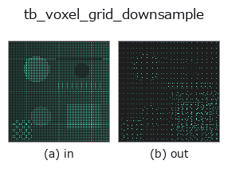

typed op• データ種: points → points
• 呼び出し: fullseye.apply(img, "tb_voxel_grid_downsample", a=0.5, b=0.5) (2-D は 1 画像 + 2 スカラつまみ a,b∈[0,1] のモデル)

*図は合成の入力 128×128 で実際に走らせた出力。左が入力、右が出力。点群は上から見た散布(明るさ = z)、1-D 列は折れ線、体積は z 方向の最大値投影、動画は中央フレーム、複素画像は振幅、絵にならない返り値は値そのもの。*
*つまみ a は出力を変えない(実測: 0.1 / 0.5 / 0.9 で同一)。*
*つまみ b は出力を変えない(実測: 0.1 / 0.5 / 0.9 で同一)。*
段階(前置きの op → この op。左から順):
▸ tb_voxel_grid_downsample: stages (docs site)
別の画像でも(合成シーン / 写真 / 硬貨。上段が入力、下段がその出力。つまみは既定):
▸ tb_voxel_grid_downsample: other inputs (docs site)
辺 voxel_size の格子で点群を間引き、各セルを重心 1 点に集約する(決定論的)。
空間を一辺 `voxel_size` の立方体セルに区切り、同じセルに落ちた点をその重心
1 点で代表させる。密度ムラを均し、下流(ICP・特徴量)の計算量を点数で抑える標準手法。
出力順はボクセル座標の辞書順で固定(同じ入力なら常に同じ出力=決定論的)。
Parameters
----------
points : array_like, shape (N, 3)
入力点群。
voxel_size : float
セルの一辺(> 0)。大きいほど強く間引く。
Returns
-------
ndarray, shape (M, 3)
各占有セルの重心(M <= N)。すべて入力の軸並行 bounding box 内に収まる。
Notes
-----
`voxel_size <= 0` は ValueError。空入力は空 (0,3) を返す(graceful)。
重心はセル内の点の平均なので、必ず入力点の凸包(ゆえに bbox)内に入る。
2-D 進化レジストリへ橋渡しした 3d の op `voxel_grid_downsample。実装は同じで、呼び出し規約だけ op(v, a, b) に合わせてある。この op に調整点は無く、a も b` も使われない。
• サンプルデータ カタログ(DL URL / ライセンス) — 2-D は skimage.data(BSD/public)+ 合成、3-D は実データ源(Stanford/PDS 等)の DL URL。
• 演算子の来歴・参考文献 — この op 族の元になった研究/手法の出典。
下のプログラムは実際に走ることを確かめてある(図と同じ入力)。Studio のヘルプではこのブロックがボタンになり、その場で読み込んで実行できる。
img_to_points 0.50 0.50 tb_voxel_grid_downsample 0.50 0.50
▸ Load this pipeline · Load & run
次の例は元の台帳 op voxel_grid_downsample を呼ぶもの。この橋渡し op は同じ実装を fn(v, a, b) 規約に合わせただけなので、挙動はそのまま当てはまる(呼び出し形だけ違う)。
• pointcloud_downsampling — py -3.11 examples_3d/pointcloud_downsampling.py
points を入力に取れる)identity · tb_points_to_voxel · tb_estimate_point_normals · tb_iss_keypoints · tb_project_points · tb_render_point_depth · tb_statistical_outlier_removal · tb_radius_outlier_removal
typed)tb_points_to_voxel · tb_estimate_point_normals · tb_iss_keypoints · tb_project_points · tb_render_point_depth · tb_statistical_outlier_removal · tb_radius_outlier_removal · tb_mls_smooth
*Provenance: ops.py — 2D operator registry. この per-op ノートは tools/opdocs.py md が自動生成(手編集しない)。*
© 2026 Kazufumi Furuse — Fullseye operator documentation. Licensed under Apache-2.0.
{kind=link}
{kind=link}